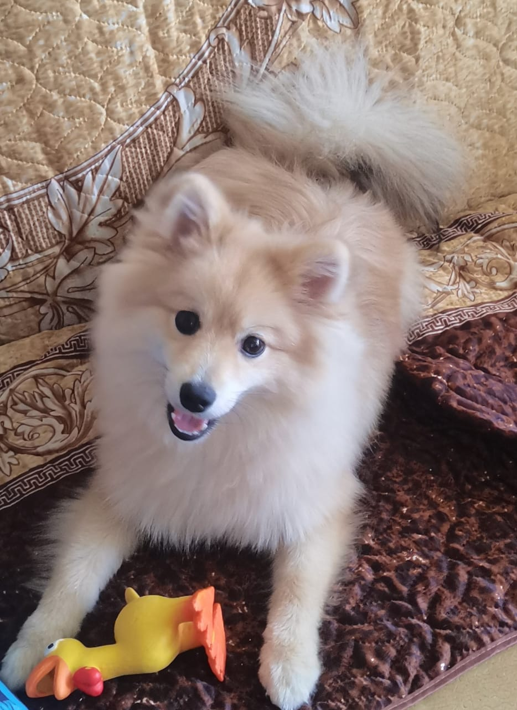

Порода Немецкий шпиц
Внешний вид
Череп у породы средний, голова клинообразная и сужается к концу носа. Морда средней длины, не заостренная. Нос и губы чёрного цвета, у коричневых шпицев чёрно-коричневого. Челюсти развитые с ножницеобразным прикусом у средних, малый и померанских шпицев допускается небольшое отсутствие премоляров. Прямой прикус также допускается. Глаза темные и миндалевидные. Линия верха плавно переходит в короткую, прямую спину. Пышный развевающийся хвост, который частично закрывает спину, округляет силуэт. Грудь глубокая и хорошо развитая. Передние конечности прямые и широкие, с хорошим костяком. Задние конечности очень мускулистые и до скакательного сустава богато покрыты шерстью. Задние ноги стоят прямо и параллельно. Немецкий шпиц обладает длинной густой шерстью с богатым подшерстком, вокруг шеи она образует гриву, хвост пышно покрыт шерстью и лежит на спине. Немецкий шпиц имеет двойную шерсть, состоящую из длинного и прямого покровного волоса и короткий плотный, ватный подшерсток. Стрижка шпица должна быть незаметной.
Сплошное очарование
Пушистая шерсть
Характер породы
Немецкий шпиц обладает уравновешенным характером. К хозяину и его семье относится с нежностью и лаской. Он очень привязывается к ним, подстраивается под настроение хозяина. Независимо от возраста это очень добродушные, энергичные и игривые собаки. Они очень хорошо ладят с детьми и до последнего терпят все детские шалости. Шпицы хорошо уживаются с другими домашними питомцами.